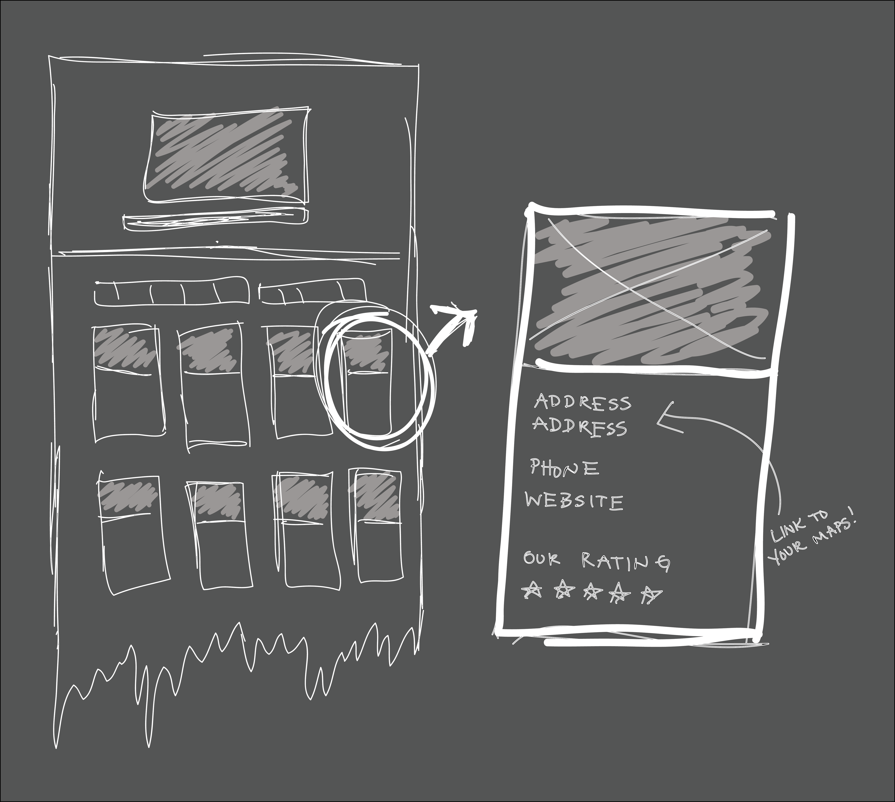

The Coffee Shops spokane will be a mobile users best friend. When you need to find a perfect shop, you can use this one pages site design to filter down the results and connect directly to your cell phones maps to get you there!
I start all of my web design with wireframes to decide how I want my site to look and how it will work before I even open a text editor. I think this step is very important, otherwise you end up moving things around for hours without making any progress.
This site is a work in progress. The Coffee Shops was a fun concept one of my teachers helped me come up with. This site would simply be filter that allows you to find the best shop for you! You will be able to click through criteria to filer down the options.
Live DemoThe Code